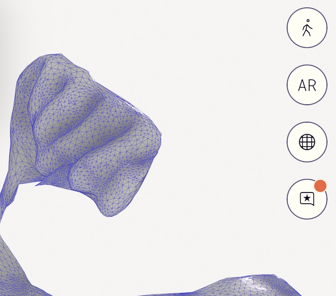
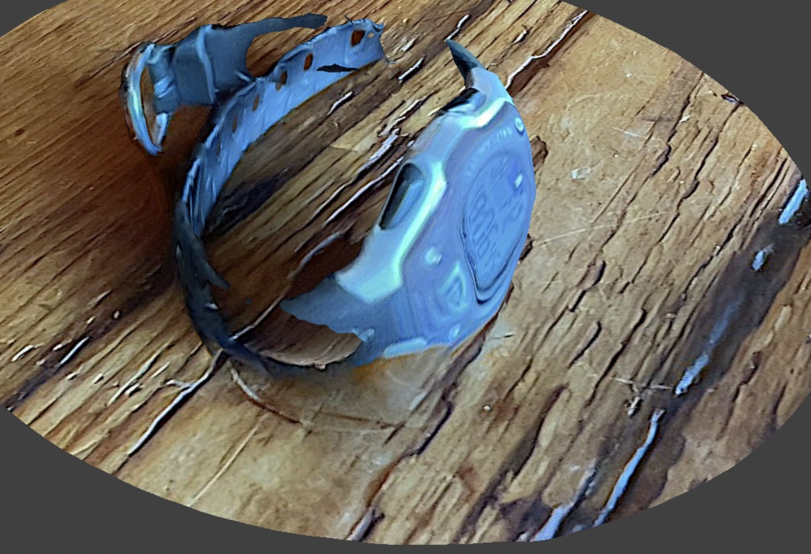
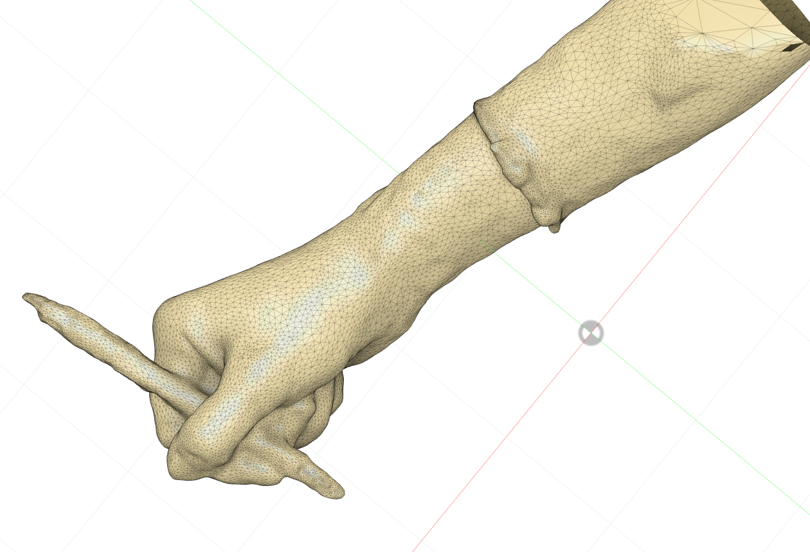
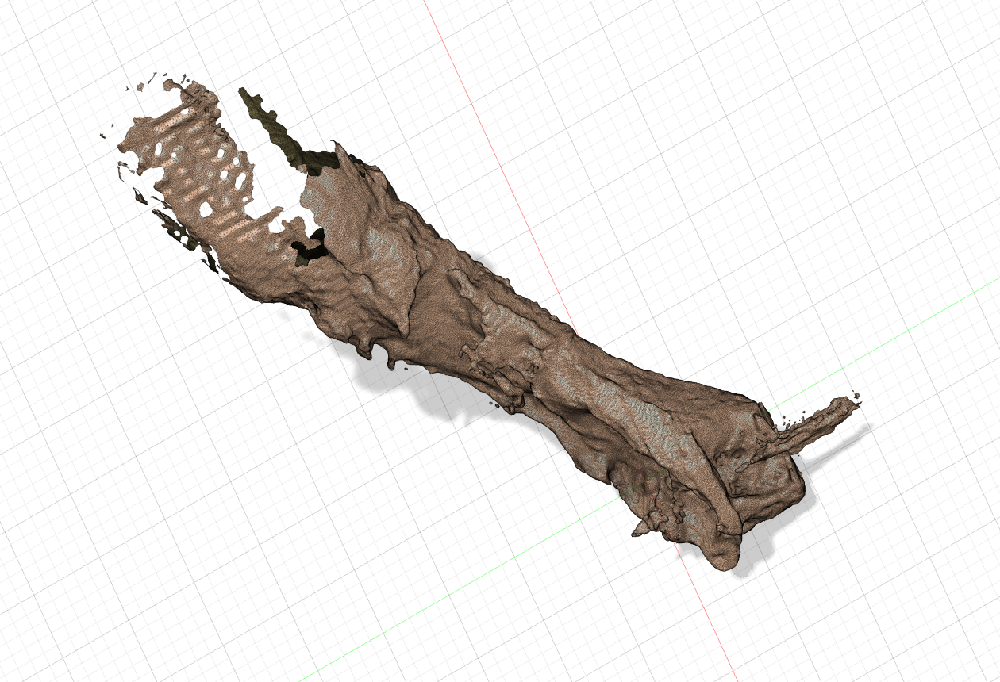
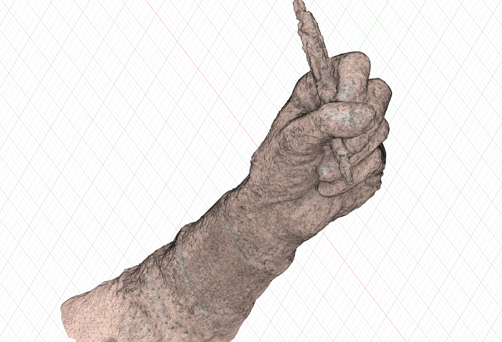
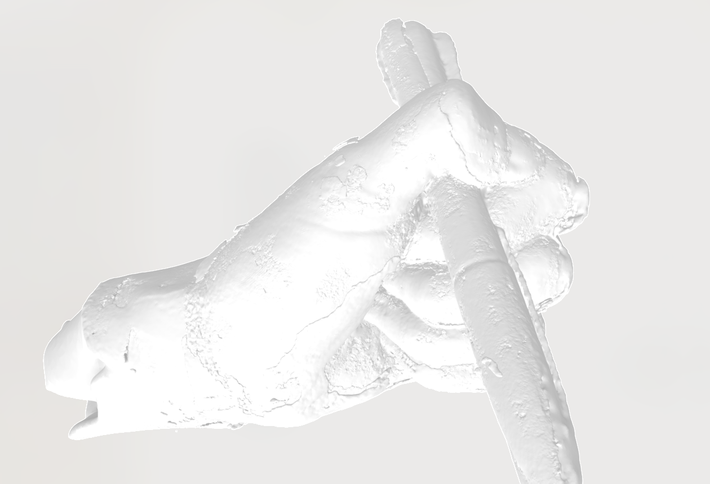
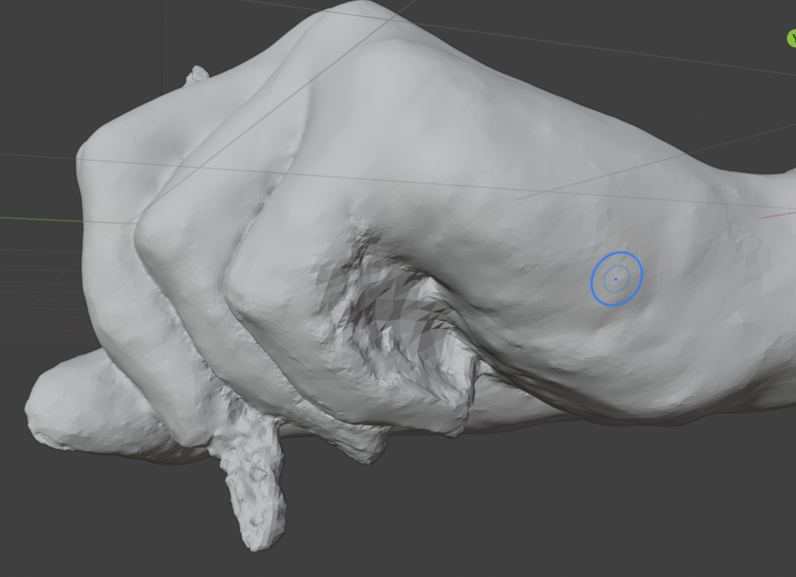
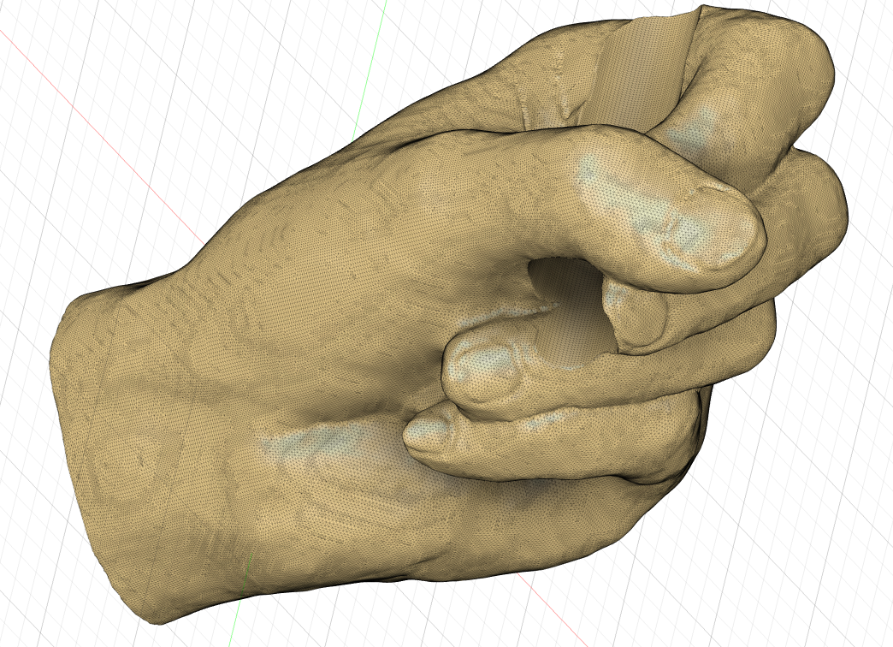
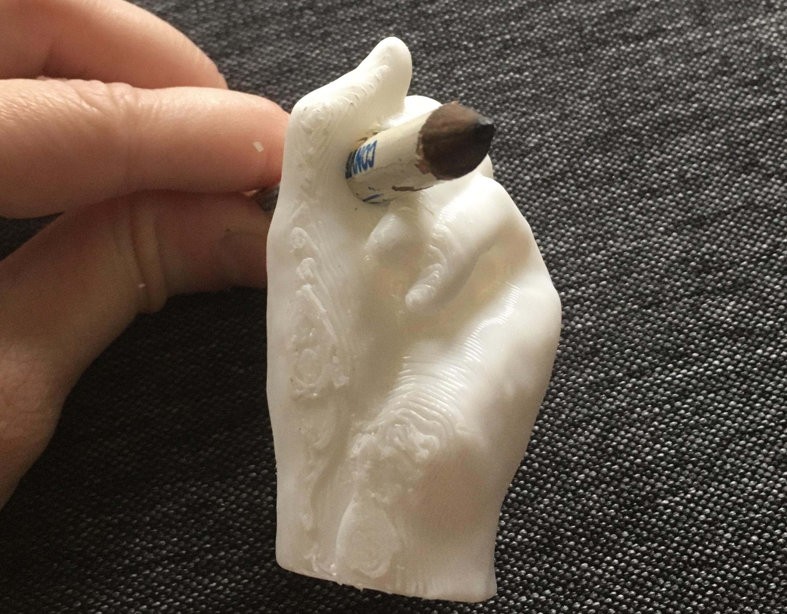
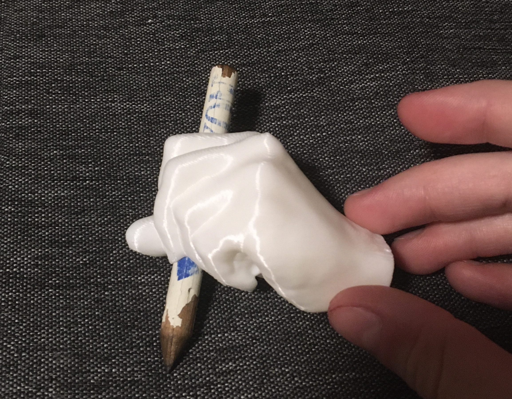

<div class="container">
<p class="margin"> </p>
<h3>Week 5: 3D Design, Printing, Scanning </h3>
<p class="margin"> </p>
<div class="row">
<div class="col">
<!--<h4>Kinetic Sculpture <a href="./kinetic_sculpture.f3d" download>(download project)</a></h4>-->
<h4>Scanning: RevoPoint and iOS 3D scanning apps</h4>
<p>
The final project component I chose to print this week is the hand for my drawing machine. I wanted to have a model
ready to 3D print for Sunday, and didn't feel confident modeling a hand from scratch, so I needed a scan to work off of.
Because I couldn't make it in to use the RevoPoint until too late, I decided to try using a phone-based photogrammetry/scanning app.
After consulting some Reddit threads, I landed on five to try out: 3D Scanner App, Scaniverse, Polycam, KIRI Engine,
and Luma 3D. Because I ended up spending more time than anticipated with them, I've made a little table to help
future me remember the pros and cons of each. These were my experiences scanning another person's hand by taking photos
in an orbit around them; I think some of the apps would work better for stationary objects than they did for my needs.
</p>
</div>
</div>
<table class="table table-bordered">
<thead>
<tr>
<th scope="col"></th>
<th scope="col">Pros</th>
<th scope="col">Cons</th>
<th scope="col">Best scan</th>
</tr>
</thead>
<tbody>
<tr>
<th scope="row">Polycam</th>
<td>
<ul>
<li>Photogrammetry and lidar</li>
<li>Many export types (some paid)</li>
<li>Object masking toggle</li>
<li>Can select level of detail</li>
<li>Easy to use</li>
</ul>
</td>
<td>
<ul>
<li>Requires sign-in</li>
<li>Only 5 photogrammetry captures for free</li>
<li>I couldn't get a good mesh from it</li>
<li>Has to be uploaded</li>
<li>Took a very long time to process</li>
</ul>
</td>
<td></td>
</tr>
<tr>
<th scope="row">Scaniverse</th>
<td>
<ul>
<li>Lidar scanning (which allows scans to have measurements)</li>
<li>Processes images/scan on the device</li>
<li>Multiple export types</li>
<li>Basic editing in-app</li>
</ul>
</td>
<td>
<ul>
<li>I couldn't get a half-decent scan from it :( (maybe the lidar sensor on the iPad I borrowed wasn't
very good?).
</li>
<li>
Seems like it's more for scanning larger scale features out in world
</li>
<li>
Example scan of my watch because I could get nothing that looks like a hand
</li>
</ul>
</td>
<td></td>
</tr>
<tr>
<th scope="row">3D Scanner App</th>
<td>
<ul>
<li>TrueDepth (FaceID sensor), lidar, and photogrammetry scanning</li>
<li>100% free</li>
<li>Photogrammetry is easy to use</li>
<li>Good UI</li>
<li>Prettiest unmodified meshes from photogrammetry</li>
<li>Has an object masking toggle</li>
</ul>
</td>
<td>
<ul>
<li>Photogrammetry requires computer to process images</li>
<li>As noted by Redditors, lidar not useful at small scale</li>
<li>TrueDepth is low resolution</li>
<li>Requires even and bright lighting for good photogrammetry meshes</li>
</ul>
</td>
<td><a href="models/baked_mesh_77ca93aa.obj" download></a></td>
</tr>
<tr>
<th scope="row">Luma 3D Capture</th>
<td>
<ul>
<li>Photogrammetry</li>
<li>Guides you on how to take photos by showing paths on screen and setting a bounding box around the object</li>
<li>Offers high, medium, and low-poly exports</li>
</ul>
</td>
<td>
<ul>
<li>Requires sign-in/account</li>
<li>Can be challenging to follow the required photo paths if you can't orbit all the way around an
object at a certain level (for example, because a hand attaches to an arm there)
</li>
<li>Processes the images on their servers</li>
<li>Taking photos took the longest of all the apps</li>
<li>If the required paths are not completed, can fail to produce a mesh</li>
<li>Takes forever to upload and process</li>
<li>Didn't produce a very nice mesh for me</li>
</ul>
</td>
<td><a href="models/mesh.obj" download></a></td>
</tr>
<tr>
<th scope="row">KIRI Engine</th>
<td>
<ul>
<li>Easy to use</li>
<li>The one that worked best for me!</li>
<li>High level of detail</li>
<li>Object masking works well</li>
<li>Multiple export types</li>
<li>Multiple export levels of detail</li>
</ul>
</td>
<td>
<ul>
<li>Requires sign-in/account</li>
<li>Requires upload to process</li>
<li>Processing takes a somewhat long time</li>
<li>The hi-poly mesh, though detailed, was pretty lumpy</li>
<li>Only 3 free exports</li>
<li>Emails your mesh to you</li>
</ul>
</td>
<td><a href="models/3DModel.obj" download></a></td>
</tr>
</tbody>
</table>
<div class="row">
<div class="col">
<p>
Because I had some time while waiting for the hand to print, I decided to do a scan with the RevoPoint as well
for a full comparison. The RevoPoint scanning process took me much longer than any of the photogrammetry apps,
but that might have been because I was doing it on my own. The RevoScan software gave me much more control over how the mesh was produced
and let me decide myself how it should look, but that also meant that producing the mesh took longer and relied on
my own ability to figure out how to best stitch together my scans.
</p>
<p>
My RevoPoint mesh (<a href="models/Merge_05_mesh_revo.ply" download>download</a>), seen at right, has the best level of detail and depth of any of the scans. (It's also a MUCH larger file.)
If I spend more time putting it together, I think it could be a very good starting point for the hand of my drawing machine should
I choose to revise it.
</p>
</div>
<div class="col">
<a href="models/Merge_05_mesh_revo.ply" download></a></td>
</div>
</div>
<div class="row">
<div class="col-sm-8">
<h4>Designing and printing my final project component (<a href="models/refined_hand_blender_small_solid.f3d" download>f3d</a>) (<a href="models/refined_hand_blender_small_2.obj" download>obj</a>) (<a href="models/refined_hand_blender_small copy.stl" download>stl</a>) (<a href="models/EK_hand_blender_0.3mm_PLA_MK3S_55m.gcode" download>gcode</a>)</h4>
<p>
Looking at the lumpy KIRI Engine scan (<a href="models/3DModel.obj" download>download</a>), I realized I needed to edit the mesh if I wanted it as the basis for my drawing
machine's hand, so I downloaded Blender. I used the sculpt tools, especially smooth, scrape/fill, and fill/deepen,
to clean up the surface of the hand, as well as the edit tools to try to clean up some weird pits and peaks in the mesh. Once
satisfied, I used the Boolean modifier to carve out a portion of the hand to hold the drawing machine's pencil.
</p>
<p>
After that, I brought the mesh into Fusion and used the mesh Repair tool to rebuild it into something that I could
print (closing holes, etc). Finding there were still some weird points in the mesh, I went through with Erase and Fill
(under Direct Edit in the Modify section) to try to eliminate the tiny points.
</p>
</div>
<div class="col">


</div>
</div>
<div class="row">
<div class="col-sm-3">

</div>
<div class="col-sm-3">

</div>
<div class="col">
The print generally worked out well and is able to hold a pencil as required. I had trouble snapping off the organic
supports, so even though they made the print 10 minutes shorter, I don't think I'd use them again. The biggest issue with the hand
is that the bottom is rough and uneven where it sat on the bed. That could probably be fixed by printing it in a different
orientation, but I need to make sure that the layers still go horizontally across the hand for strength in the vertical direction.
The final component will need a way to attach to the drawing arm, but because I'm not yet certain what that will look like, I didn't include it.
</div>
</div>
<div class="row">
<div class="col">
<h4>Final project</h4>
<p>
See my <a href="../13_finalproject/index.html">final project page</a>.
</p>
</div>
</div>
<br>
</div>